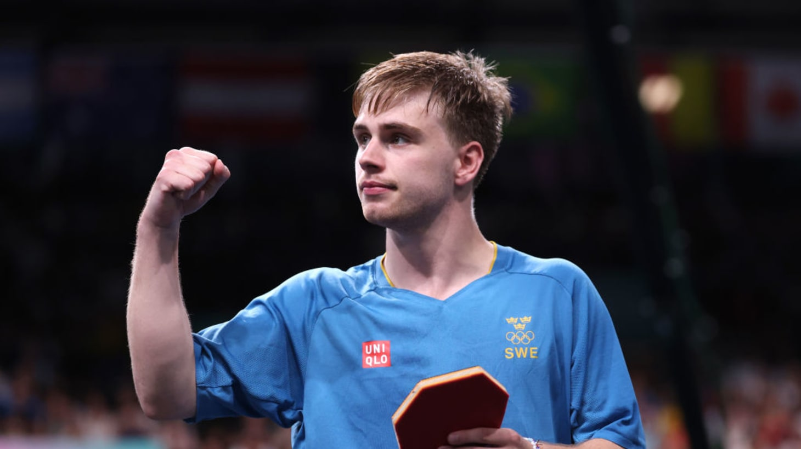

Truls Moregard (Швеция, 6180 очков)Биография. Родился 16 февраля 2002 года в Ховманторпе (Смоланд), первый тренер — отец; юношеский клуб Hovmantorp GoIF.
Стиль. Правша с «творческим» арсеналом: боковые блоки, смена ритма и вращения, непредсказуемые удары необычной ракеткой Stiga Cybershape. Шоумен, который ломает соперников психологически.
Карьера. Сенсация ЧМ‑2021 в Хьюстоне: серебро одиночки после финала с Фань Чжэньдунем. На ОИ‑2024 в Париже — два серебра: одиночка (по пути выбил Ван Чуциня) и команда. Бронза одиночки и серебро пары ЧЕ‑2024, командное золото ЧЕ‑2023. Сезон‑2025: победа на домашнем Europe Smash в Мальмё — первый европейский титул Grand Smash, в финале повержен тогдашний №1 Линь Шидун; триумф на WTT Champions Montpellier (4:0 с Мацусимой в финале); финал WTT Finals‑2025, где уступил Харимото. В марте 2026‑го достиг карьерного №2.
Форма. После весеннего спада к октябрю вернул позиции (↑1 до №4) и остаётся символом шведского возрождения.